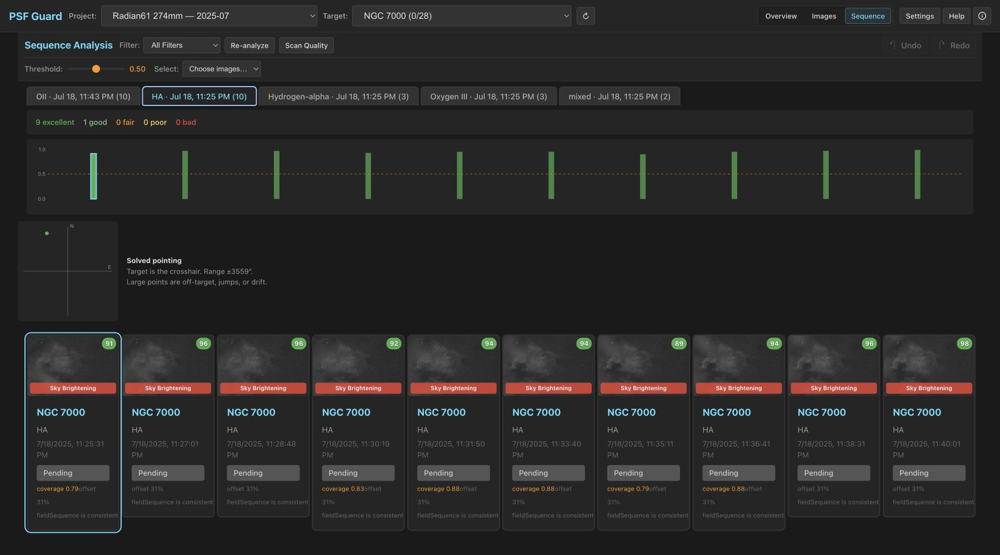
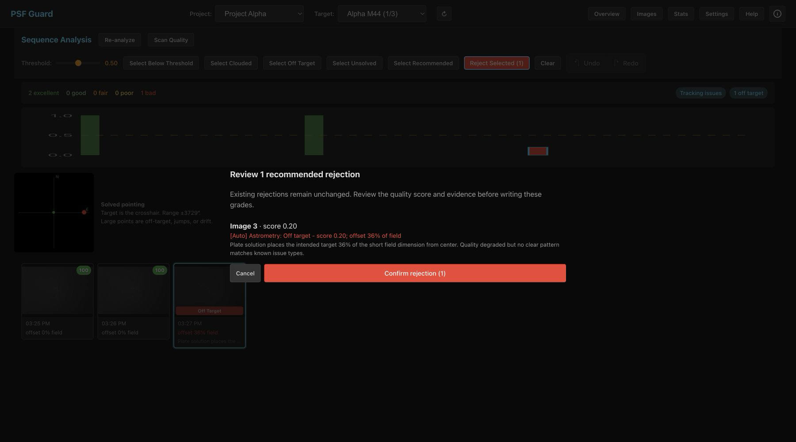

Astrometry Quality
A quality scan solves the current FITS pixels with Seiza, compares every solved center with the intended Target Scheduler field and its sequence, and adds auditable pointing evidence to the same 0–1 quality score used for cloud, occlusion, photometry, guiding, and PSF grading.

Run a quality scan
- Open a Target Scheduler target and switch to Sequence Analysis.
- Press Scan Quality. Spatial/photometric analysis runs first, followed by a fresh plate solve of each frame.
- Inspect the pointing scatter and per-image evidence. Use Select Off Target, Select Unsolved, or Select Recommended to focus the review.
Results are cached per database, but reuse is tied to the FITS size and modification time plus the solver resource fingerprints. Replacing a FITS file under the same name cannot reuse stale WCS.
How flags affect grading
| Flag | Evidence | Score / recommendation |
|---|---|---|
| Off Target | Target is outside the solved footprint, or a short/unclustered departure is at least 20% of the short field dimension | Pointing score 0; total capped at 0.20; rejection recommended |
| Stable Offset | At least three consecutive solves form a stable deliberate framing cluster while the target remains in frame | Advisory only; no score cap or automatic rejection |
| Pointing Jump | A short run leaves one framing cluster and later returns to it | Total capped at 0.30; rejection recommended |
| Pointing Drift | Robust trend within one contiguous framing segment exceeds the field/scatter threshold | Affected tail capped at 0.30; rejection recommended |
| Plate Solve Failed | Pixels decoded, but the field did not solve or too few stars were detected | Modest penalty; rejection only with independent degradation |
| Solve Unavailable | Catalog/index, decode, cancellation, or internal/resource failure | Operational error; no quality flag or automatic grade |
Solved centers are clustered before offset, jump, or drift decisions. A
sustained A → B reframing step (or A → B → C mosaic)
becomes a new stable segment instead of making later frames look off target
or manufacturing a session-wide drift. A short A → B → A
excursion is a pointing jump. Drift is fitted separately inside each
contiguous segment.
Finding the intended target
PSF Guard reads the Target Scheduler database without changing its schema. Current target RA/Dec fields are preferred; compatible target metadata and capture-specific intended coordinates are fallbacks. Absolute Off Target grading runs only when an authoritative supported-epoch coordinate is available.
Without a target coordinate, solved centers still support relative pointing jump and drift detection. PSF Guard does not invent an Off Target verdict.
Review before write-back

[Auto] reason, and supporting evidence.Nothing changes until Confirm rejection is pressed. Existing rejected images remain untouched, and UI changes use the normal undo/redo stack. Example reasons remain specific enough to audit later:
[Auto] Astrometry: Off target - score 0.20; offset 36% of field
[Auto] Astrometry: Tracking lost - score 0.30; pointing jump 420 arcsecCLI and regrade workflows
Use --dry-run before any database write.
# Preview every proposed database write
psf-guard screen-fits /path/to/lights --regrade-db my-db --dry-run
# Apply supported recommendations
psf-guard screen-fits /path/to/lights --regrade-db my-db--regrade-db matches each frame by basename and capture time
(within 10 minutes), loads its intended target, and enables fresh plate
solving. An isolated no-solve is reported and lowers the score, but is not
automatically rejected. Operational solver errors always abstain.
When orbital elements are already configured or cached, the same solve also projects satellite crossings and tests the nearby pixels for a matching trail. Predictions lower the score for review; only a high-risk candidate with pixel alignment can propose rejection. See Satellite Tracks.
The implementation-level details live in docs/ASTROMETRY_QUALITY.md.